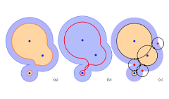

| [HOME PAGE] | [PREPRINTS] | [JOURNALS] | [CONFERENCES] |

Preprints
Flat Delaunay complexes for homeomorphic manifold reconstruction.Research Report, March 2022, arXiv:2203.05943. [arXiv] |
|
Delaunay-like triangulation of smooth orientable submanifolds by L1-norm minimization.Research Report, March 2022, arXiv:2203.06008. [arXiv] |
|
Tight Bounds for the Learning of Homotopy à la Niyogi, Smale, and Weinberger for Subsets of Euclidean Spaces and of Riemannian Manifolds.Research Report, June 2022, arXiv:2206.10485. [arXiv] [HAL] A short version of the paper has been accepted to SoCG 2024! A video is available on YouTube. |

Journals
|  |
(δ,ε)-ball approximation of a shape: definition and complexity.Discrete and Computationa Geometry, 61:595–625, 2019. [pdf] [hal] |
Recognizing shrinkable complexes is NP-complete.Journal of Computational Geometry (JoCG), 7(1):430–443, 2016. [Doi] [pdf] |
|
Far-field reflector problem under design constraints.International Journal of Computational Geometry & Applications (IJCGA), 25(2), June 2015. [Doi] [pdf] |
|
Geometry driven collapses for converting a Čech complex into a triangulation of a nicely triangulable shape.Discrete and Computational Geometry, 54(4):798–825, 2015. [Doi] [pdf] [arXiv] |
|
Homological Reconstruction and Simplification in R3.Computational Geometry: Theory and Applications (CGTA), 48(8):606–621, September 2015. [pdf] |
|
Optimal Reconstruction Might be Hard.Discrete and Computational Geometry, 49(2):133–156, 2013. [Doi] [pdf] |
|
Efficient data structure for representing and simplifying simplicial complexes in high dimensions.International Journal of Computational Geometry and Applications (IJCGA), 22(4):279–303, 2012. [pdf] |
|
Vietoris-Rips complexes also provide topologically correct reconstructions of sampled shapes.Computational Geometry: Theory and Applications (CGTA), 46:448–465, 2012. [Doi] [pdf] [Errata] |
|
A tight bound for the Delaunay triangulation of points on a polyhedron.Discrete and Computational Geometry, 48(1):19–38, 2012. [pdf] --- Old version:[Research Report INRIA] |
|
Stability and Computation of the Medial Axes — A State-of-the-Art Report.In T. Möller, B. Hamann, and R. Russell, editors, Mathematical Foundations of Scientific Visualization, Computer Graphics, and Massive Data Exploration, Mathematics and Vizualization, pages 109–125. Springer-Verlag, Berlin, Germany, 2009. [pdf] |
|
Représentation par axe médian.Chapitre 9 du livre "Géométrie discrète et images numériques" par David Coeurjolly, Annick Montanvert, and Jean-Marc Chassery. Ouvrage collectif. Traité IC2 série signal et image, Hermès, 2007. [pdf] |
|
Inclusion-exclusion formulas from independent complexes.Discrete and Computational Geometry. Vol. 37, No. 1, January, pages 59–77, 2007. [pdf] |
|
A Linear Bound on the Complexity of the Delaunay Triangulation of Points on Polyhedral Surfaces.Discrete and Computational Geometry. Vol. 31, No. 3, February, pages 369–384, 2004. [pdf] |
|
Complexity of the Delaunay Triangulation of Points on Polyhedral Surfaces.Discrete and Computational Geometry. Vol. 30, pages 437–452, 2003. [pdf] |
|

|
r-regular Shape Reconstruction from Unorganized Points.Computational Geometry: Theory and Applications, Vol. 10, pages 239–247, 1998. |

|
Computing and Simplifying 2D and 3D Semicontinuous Skeletons of 2D and 3D shapes.Computer Vision and Image Understanding (CVIU), Vol. 67, No. 3, September, pages 261–273, 1997. [scanned pdf] |

Conferences
Delaunay-like triangulation of smooth orientable submanifolds by L1-norm minimization.38th Ann. Sympos. Comput. Geom. (SoCG'22), Berlin, Germany, June 7-10, 2022. [pdf] [proceedings] |
|
When Convexity Helps Collapsing Complexes.In 35th Ann. Sympos. Comput. Geom. (SoCG'19), Portland, USA, June 18-21, 2019. [pdf] [proceedings] |
|
Restricting Voronoi diagrams to meshes using corner validation.In Computer Graphics Forum , volume 36, pages 81–91. Wiley Online Library, 2017. [pdf] |
|
ε-covering is NP-complete.In Proc.European Workshop on Computational Geometry (EuroCG 2016), Lugano, Switzerland, March 30-April 1, 2016. [pdf] |
|

|
Recognizing shrinkable complexes is NP-complete.In A. Schulz and D. Wagner, editors, In Proc. 22nd European Symposium on Algorithms (ESA'14), pages 74–86, Wroclaw, Poland, 2014. Springer. [] |
Homological reconstruction and simplification in R3.In Proc. 29th Ann. Sympos. Comput. Geom. (SoCG'13), Rio de Janeiro, Brazil, June 17-20, 2013. [pdf] |
|
Efficient data structure for representing and simplifying simplicial complexes in high dimension.In Proc. 27th Ann. Sympos. Comput. Geom. (SoCG'11), pages 501–509, Paris, France, June 13-15 2011. [pdf] [slides] |
|
Vietoris-Rips complexes also provide topologically correct reconstructions of sampled shapes.In Proc. 27th Ann. Sympos. Comput. Geom. (SoCG'11), pages 491–500, Paris, France, June 13-15, 2011. [pdf] |
|
Optimal reconstruction might be hard.In Proc. 26th Ann. Sympos. Comput. Geom. (SoCG'10), pages 334–342, Snowbird, Utah, June 13-16, 2010. [pdf] |
|
Reconstructing shapes with guarantees by unions of convex sets.In Proc. 26th Ann. Sympos. Comput. Geom. (SoCG'10), pages 344–353, Snowbird, Utah, June 13-16, 2010. [pdf] --- Full version: [Research Report HAL] |
|
A Tight Bound for the Delaunay Triangulation of Points on a Polyhedron.In Proc. 24th European Workshop on Computational Geometry (EuroCG'08), Nancy, France. March 18--20, 2008. [pdf] |
|
Alpha-Beta Witness Complexes.In Proc. 10th Workshop on Algorithms and Data Structures (WADS), Halifax, Nova Scotia, Canada, August 15-17, 2007. [pdf] |
|
Weak Witnesses for Delaunay triangulations of Submanifold.In Proc. ACM Sympos. Solid and Physical Modeling (SPM), Beijing, China, June 4-6, pages 143–150, 2007. [pdf] |
|
Complexity of Delaunay Triangulation for Points on Lower-dimensional Polyhedra.In Proc. ACM-SIAM Sympos. Discrete Algorithms (SODA07), New-Orleans, Lousiane, USA, January 7-9, 2007. [pdf] |
|

|
Extraction and Simplification of Iso-surfaces in Tandem.In Proc. 3rd Ann. Sympos. Geom. Process. (SGP), Vienna, Autria, July 4-6, pages 139–148, 2005. [pdf] |
Inclusion-exclusion formulas from independent complexes.In Proc. 21st Ann. Sympos. Comput. Geom. (SoCG), pages 247–254, 2005. [pdf] |
|
Complexity of the Delaunay triangulation of Points on Surfaces: the Smooth Case.In Proc. of the 19th ACM Symposium on Computational Geometry (SoCG), pages 201–210, San-Diego, California, USA, June 2003. [pdf] |
|
A Linear Bound on the Complexity of the Delaunay Triangulation of Points on Polyhedral Surfaces.In Proc. of the 7th ACM Symposium on Solid Modeling and Applications, pages 139–145, Saarbrücken, Germany, June 17-21, 2002. [pdf] [slides] [slides 16x16] |
|
r-Regular Shape Reconstruction from Unorganized Points.In Proc. of the 13th ACM Symposium on Computational Geometry (SoCG), pages 248–253, Nice, France, June 1997. [pdf] |
|
Modeling noise for a better simplification of skeletons.In Proc. of the International Conference on Image Processing (ICIP), Volume III, pages 13–16, Lausanne, Switzerland, September 1996. [pdf] |
|
Using polyballs to approximate shapes and skeletons.In 12th International Conference on Pattern Recognition (ICPR), pages 626–628, Jerusalem, Israël, October 1994. [scanned pdf] |